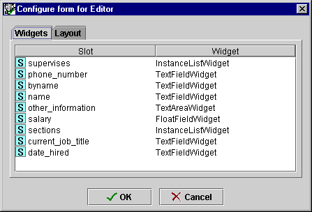
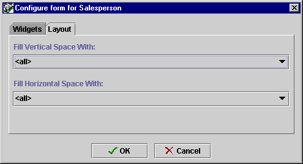

The Form Configuration dialog box allows you to:
The Widget tab displays all the widget information for the form. For example, the Widget tab in the Form Configuration dialog box for Editor lists all the slots for Editor with the currently selected widget type.

To change the widget type for the slot:
Click on the widget name in the widget column. A menu shows the list of standard widget types for the slot.
Select the widget you want.
Click OK.
If a widget has been hidden by choosing <none> from the Widget Type menu, you can redisplay the widget by selecting a different widget type under the Widget tab in the Form Configuration dialog box.
The Layout tab displays the current layout information. You can use the Layout tab to choose a widget that will expand when the form expands as the Protégé-2000 window is resized. This can be useful, for example, when you have a complex table widget that you wish to have take up most of the form. Clicking on one of the menus displays a list of all the widgets. You can choose a widget that expands vertically and a widget that expands horizontally. If you wish, these can be the same widget. Selecting <all> from the menu means that each widget is resized an equal amount.

Next: Widget Types